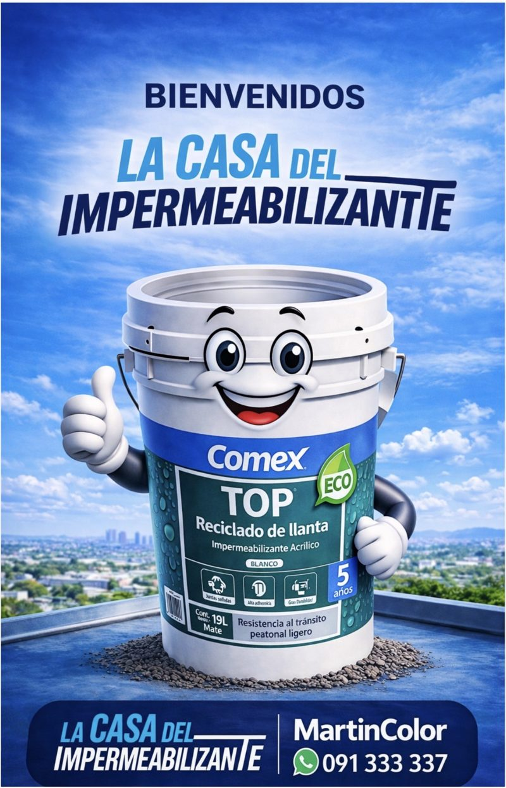
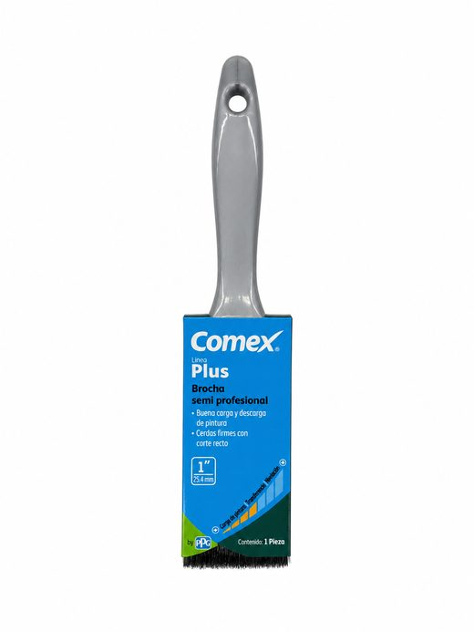
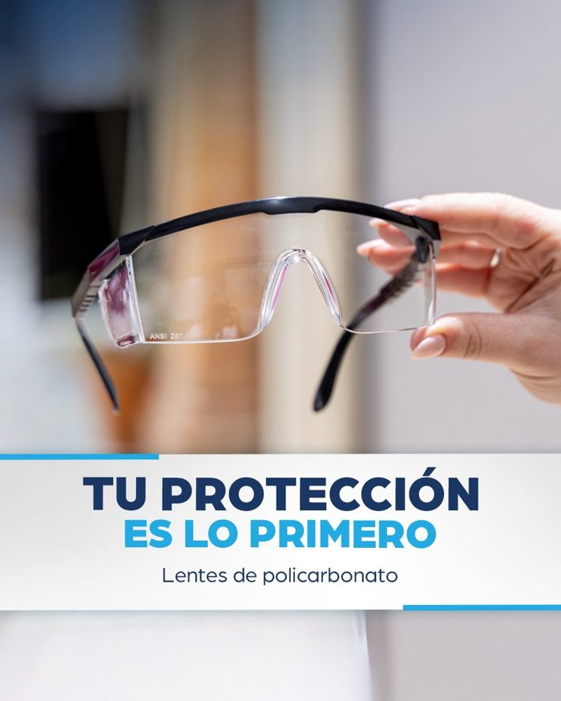
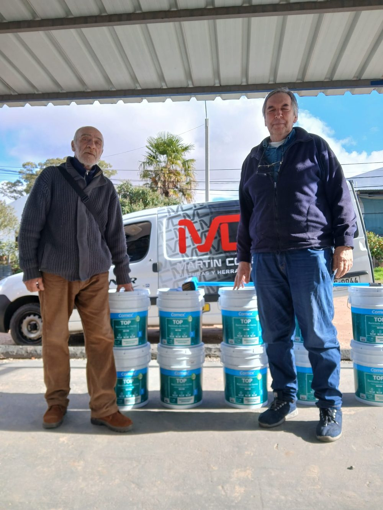
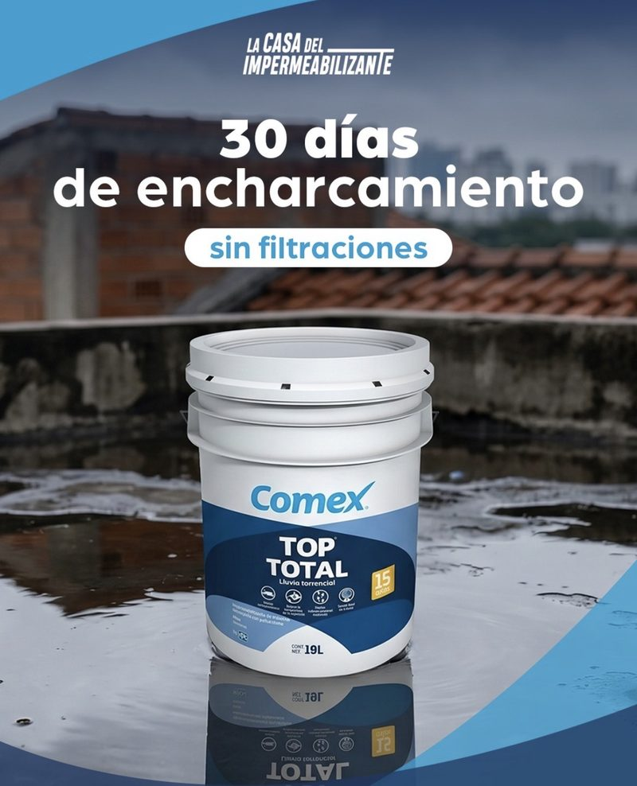

El más elegido
TOP Total Lluvia Torrencial 15 años
- Aguanta hasta 30 días de agua estancada sin filtrar.
- Resinas de poliuretano-acrílico con microfibras: estira y acompaña los movimientos del techo.
- Dos manos, con 2 horas de secado entre una y otra. Soporta tránsito peatonal.
- Dura aproximadamente 15 años, con una mano de mantenimiento.
Conocé La Casa
Bienvenidos a La Casa del Impermeabilizante
Un local entero dedicado a proteger tu techo: toda la línea Comex TOP, accesorios y alguien que te explica cómo hacerlo bien.

Calculá tu techo
¿Cuántos baldes lleva?
Poné las medidas y elegí el producto. El cálculo usa el consumo de la ficha técnica de Comex e incluye el sellador y las dos manos.
Para 48 m² con TOP Total Lluvia Torrencial 15 años.
- Superficie
- 48 m²
- Consumo
- 1,2 a 1,5 L por m²
- Litros
- 58 a 72 L
Es aproximado: depende de la rugosidad y del estado del techo. Si tiene fisuras, se tapan antes con TOP Tapagoteras. Te lo confirmamos en el local. Consultá descuentos contado en mostrador.
Cómo se aplica
Tres pasos, un techo seco
-
Reparar
Limpiá el techo: sin polvo, grasa ni partes flojas. Tapá fisuras y agujeros con TOP Tapagoteras Reforzado, en capas de hasta 1 cm.
-
Sellar
Primera mano de sellador: el mismo impermeabilizante diluido, 1 parte de producto y 4 de agua. Deja el techo listo para que el producto se adhiera.
-
Dos manos
Dos manos sin diluir, la segunda cruzada a la primera. Entre mano y mano, de 2 a 3 horas según el producto.
Aplicaciones reales
Mirá cómo trabaja Comex
Deslizá para ver más →
Línea Comex
Productos y fichas técnicas
Datos de las fichas oficiales del fabricante. Ordenados de mayor a menor duración.

Accesorios
Brochas Comex Línea Plus
Brochas semi profesionales: buena carga y descarga de pintura, cerdas firmes con corte recto. Para cortes, bordes, babetas y sellador.


Clientes
Techos que ya no gotean
Clientes llevando su TOP Reciclado de Llanta para impermeabilizar la azotea. ¿Ya protegiste tu techo con Comex? Mandanos una foto por WhatsApp y la sumamos acá.

En el local
Te lo explicamos en persona
Hacemos demostraciones en el local: te mostramos cada producto, cómo se aplica y cuál conviene para tu techo. Vení con las medidas y salís sabiendo qué hacer.